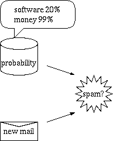
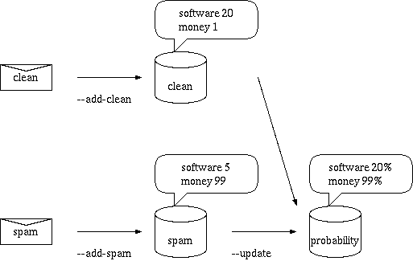
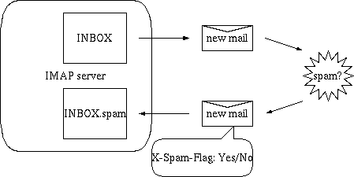
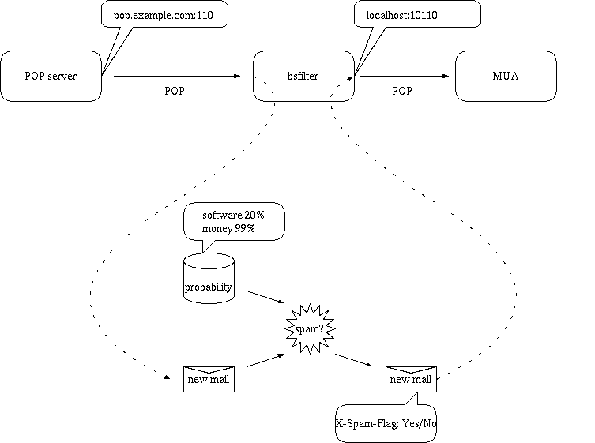

$Id: index-e.html,v 1.23 2013/11/03 08:40:41 nabeken Exp $


Install ruby interpreter. Put bsfilter/bsfilter at a directory in your executable path. On some OSs or distributions, you may use a package like ports or ebild.


It is necessary to prepare databases before filtering
1. count tokens in clean mails
% bsfilter --add-clean ~/Mail/inbox/*
2. count tokens in spam
% bsfilter --add-spam ~/Mail/spam/*
3. calculate spam probability for each token
% bsfilter --update
example: specify filenames for filtering as command line argumetns. spam probability numbers(between 0 and 1) are displayed.
% bsfilter ~/Mail/inbox/1 combined probability /home/nabeken/Mail/inbox/1 1 0.012701
example: feed mail for filtering through stdin pipe. exit status is 0 in case of spam
~% bsfilter < ~/Mail/inbox/1 ; echo $status 1 ~% bsfilter < ~/Mail/spam/1 ; echo $status 0
procmail sample recipe 1: move spams to spam folder using exit status
:0 HB: * ? bsfilter -a spam/.
procmail sample recipe 1:
add X-Spam-Flag:, X-Spam-Probability: headers and
move spams to black or gray folder based on spam probability at X-Spam-Probability: header
:0 fw | /home/nabeken/bin/bsfilter --pipe --insert-flag --insert-probability :0 * ^X-Spam-Probability: *(1|0\.[89]) black/. :0 * ^X-Spam-Probability: *0\.[67] gray/.
there are 2 formats.
There are maintenance mode and filtering mode.
Use format 1 in filtering mode in order to feed mail from stdin and judge it. Exit status becomes 0 in case of spam. If bsfilter invoked by MDA(procmailrc and etc), this style are used.
Use format 2 in filtering mode in order to specify multiple mails at command line and judge at once. Results are displayed at stdout.
type "bsfilter --help" to see all commands and options.
bsfilter is able to communicate server by IMAP and study or judge mails stored in it. bsfilter is able to insert headers or move mails to a specified folder

sample of bsfilter.conf
imap-server server.example.com imap-auth login imap-user hanako imap-password open_sesame
judge mails without X-Spam-Flag in "inbox", insert X-Spam-Probability header and move spams into "inbox.spam"
% bsfilter --imap --imap-fetch-unflagged --insert-flag --insert-probability --imap-folder-spam inbox.spam inbox
bsfilter ia able to work as POP proxy and judge mails and insert headers on a path from POP server to MUA. "--auto-update" is a valid option but "--add-clean" and "--add-spam" are not.
Let's assume that POP server is running on pop.example.com using port 110.

bsfilter is runing as POP. POP is used between the server and bsfilter and between bsfilter and MUA. bsfilter judge mails and insert headers. In this case, use the following options. Because default of --pop-port and --pop-poryx-port are 110 and 10110, they are able to be omitted.
% bsfilter --pop --auto-update --insert-flag --insert-probability --pop-server pop.example.com --pop-port 110 --pop-proxy-port 10110

When pops.exmaple.com uses POP over SSL, POP over SSL is used between the server and bsfilter, POP is used between bsfilter and MUA.(after 1.67.2.*)
% bsfilter --ssl --pop --auto-update --insert-flag --insert-probability --pop-server pops.example.com --pop-port 995 --pop-proxy-port 10110